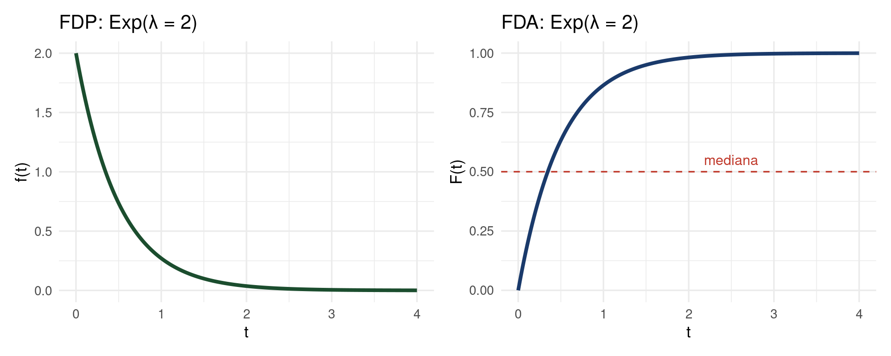
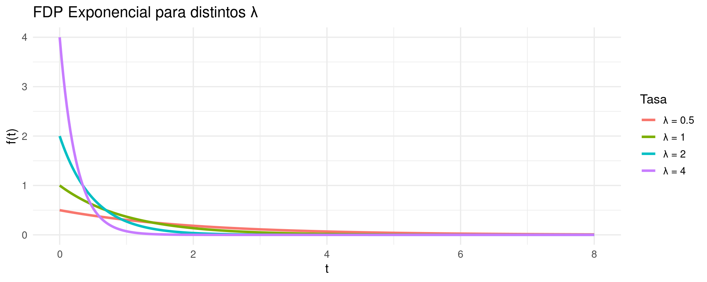
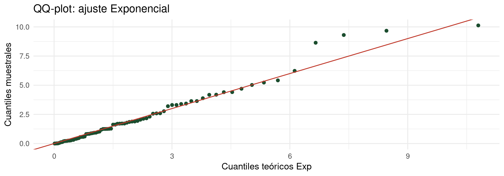

library(ggplot2); library(patchwork)
lambda <- 2
t <- seq(0, 4, length.out = 400)
p1 <- ggplot(data.frame(t, f = dexp(t, lambda)), aes(t, f)) +
geom_line(color = "#1b4d2e", linewidth = 1.4) +
labs(x = "t", y = "f(t)", title = paste0("FDP: Exp(λ = ", lambda, ")")) +
theme_minimal(base_size = 13)
p2 <- ggplot(data.frame(t, F = pexp(t, lambda)), aes(t, F)) +
geom_line(color = "#1a3a6b", linewidth = 1.4) +
geom_hline(yintercept = 0.5, color = "#c0392b", linetype = "dashed") +
annotate("text", x = 2.5, y = 0.55, label = "mediana", color = "#c0392b", size = 4) +
labs(x = "t", y = "F(t)", title = "FDA: Exp(λ = 2)") +
theme_minimal(base_size = 13)
p1 + p2Bioestadística Fundamental
Departamento de Estadı́stica, Sede Bogotá
Clase 15
Contenido
Parte I: Fundamentos
- Conexión con el proceso de Poisson.
- FDP y FDA de la Exponencial.
- Esperanza, varianza y percentiles.
- Propiedad de falta de memoria.
Parte II: Aplicaciones
- Ejemplos en tiempo de vida y espera.
- Código R: dexp, pexp, qexp.
- Diagnóstico de ajuste.
- Errores comunes y taller.
Distribución Exponencial
Modelando tiempos de espera y de vida en sistemas biológicos
Bioestadística Fundamental, Departamento de Estadística, UNAL Bogotá
Motivación: tiempos de espera en agricultura
- ¿Cuánto tiempo transcurre hasta el primer ataque de mosca de la fruta en un cultivo de mango?
- ¿Cuál es la vida útil de una bomba de riego hasta su primera falla?
- ¿Cuántos días transcurren entre lluvias consecutivas en una región semiárida de la costa colombiana?
- En todos estos casos modelamos el tiempo hasta que ocurre un evento, cuando los eventos siguen un proceso de Poisson.
- La distribución Exponencial es el modelo natural para estos tiempos de espera.
Conexión con la Poisson
Proposición: Poisson y Exponencial
Si el número de eventos en un intervalo sigue una \(\text{Poisson}(\lambda t)\), entonces el tiempo \(T\) entre eventos consecutivos sigue una distribución \(\text{Exponencial}(\lambda)\).
- Ejemplo: si se detectan en promedio 2 focos de plaga por hectárea por semana (\(\lambda = 2\)), el tiempo entre focos consecutivos sigue Exponencial(2) semanas.
- \(E(T) = 1/\lambda = 0.5\) semanas entre focos consecutivos.
Distribución exponencial: definición
Definición: Distribución Exponencial
Se dice que \(T \sim \text{Exp}(\lambda)\) si su FDP es:
\[f(t) = \lambda e^{-\lambda t}, \quad t \geq 0\]donde \(\lambda > 0\) es la tasa de ocurrencia (eventos por unidad de tiempo).
- El soporte es \([0, \infty)\): la variable toma valores positivos.
- Verificación: \(\int_0^{\infty} \lambda e^{-\lambda t}\,dt = \lambda \cdot \frac{1}{\lambda} = 1\). ✓
- Notación alternativa: algunos textos usan \(\text{Exp}(\beta)\) donde \(\beta = 1/\lambda\) es la escala media.
FDA de la distribución exponencial
FDA: Exponencial(\(\lambda\))
\[F(t) = P(T \leq t) = 1 - e^{-\lambda t}, \quad t \geq 0\]
- Probabilidad de que el evento aún no ocurra en \([0, t]\): \(P(T > t) = e^{-\lambda t}\).
- \(P(a \leq T \leq b) = e^{-\lambda a} - e^{-\lambda b}\).
- La FDA tiene una forma analítica cerrada, a diferencia de la Normal (Clase 16).
Parámetros de la exponencial
Teorema: E(T), Var(T) y percentiles
Si \(T \sim \text{Exp}(\lambda)\):
\[E(T) = \frac{1}{\lambda} \qquad \text{Var}(T) = \frac{1}{\lambda^2} \qquad \sigma_T = \frac{1}{\lambda}\]El percentil \(p\): \(t_p = -\dfrac{\ln(1-p)}{\lambda}\).
- Notable: \(E(T) = \sigma_T\). La media y la desviación estándar son iguales, lo que implica una distribución muy asimétrica a la derecha.
- Mediana: \(t_{0.5} = \ln(2)/\lambda \approx 0.693/\lambda\), que es menor que la media \(1/\lambda\).
Derivación: E(T) de la Exponencial
Demostración: E(T)
\[E(T) = \int_0^{\infty} t \cdot \lambda e^{-\lambda t}\,dt\]
Integrando por partes con \(u = t\), \(dv = \lambda e^{-\lambda t}dt\):
\[= \left[-t e^{-\lambda t}\right]_0^{\infty} + \int_0^{\infty} e^{-\lambda t}\,dt = 0 + \frac{1}{\lambda} = \frac{1}{\lambda} \quad \blacksquare\]Propiedad de falta de memoria
Teorema: falta de memoria
Si \(T \sim \text{Exp}(\lambda)\), entonces para todo \(s, t \geq 0\):
\[P(T > s + t \mid T > s) = P(T > t)\]Interpretación
- Habiendo esperado \(s\) días sin lluvia, la probabilidad de esperar \(t\) días más es la misma que si recién empezáramos a esperar.
- La distribución no tiene memoria: el historial de espera no cambia la distribución futura.
Unicidad
- La Exponencial es la única distribución continua con la propiedad de falta de memoria.
- Cuando hay desgaste o envejecimiento, esta propiedad no se cumple y se usan otras distribuciones (Weibull, Gamma).
Gráfica: FDP y FDA de la Exponencial

Ejemplo 1: vida útil de una bomba de riego
Ejemplo: sistema de riego, Meta
La vida útil de una bomba de riego centrífuga en condiciones de campo en el Meta sigue una distribución Exponencial con media 3 años. Sea \(T\) = tiempo hasta la primera falla (años).
- \(E(T) = 3\) años, entonces \(\lambda = 1/3\) fallas por año. \(T \sim \text{Exp}(1/3)\).
- Calcule: (a) \(P(T > 2)\), (b) \(P(1 \leq T \leq 4)\), (c) mediana de vida útil, (d) percentil 10.
Cálculo: vida útil de la bomba
Probabilidades
- \(P(T > 2) = e^{-2/3} \approx 0.513\)
- \(P(1 \leq T \leq 4) = e^{-1/3} - e^{-4/3} \approx 0.716 - 0.264 \approx 0.452\)
Percentiles
- Mediana: \(t_{0.5} = \ln(2) \times 3 \approx 2.08\) años
- \(P_{10}\): \(t_{0.10} = -\ln(0.90) \times 3 \approx 0.316\) años \(\approx 115\) días
Código R: distribución exponencial
[1] 0.5134171[1] 0.4529342[1] 2.079442[1] 0.3160815Media: 2.991 Var: 9.257 Efecto de \(\lambda\) en la forma de la distribución
library(ggplot2); library(tidyverse)
lambdas <- c(0.5, 1, 2, 4)
df <- map_dfr(lambdas, function(l) {
t <- seq(0, 8, length.out = 300)
tibble(t, fdp = dexp(t, l), lambda = paste0("λ = ", l))
})
ggplot(df, aes(t, fdp, color = lambda)) +
geom_line(linewidth = 1.2) +
labs(x = "t", y = "f(t)", color = "Tasa",
title = "FDP Exponencial para distintos λ") +
theme_minimal(base_size = 13)
Ejemplo 2: tiempo entre lluvias en la Guajira
Ejemplo: sequía en La Guajira
En la región árida de La Guajira, llueve en promedio 0.8 veces por mes durante la temporada seca. El tiempo entre lluvias consecutivas sigue una Exponencial. ¿Cuál es la probabilidad de que pasen más de 2 meses sin lluvia?
- \(\lambda = 0.8\) lluvias/mes, \(T \sim \text{Exp}(0.8)\). \(E(T) = 1/0.8 = 1.25\) meses.
[1] 0.2018965[1] 0.866434- Hay aproximadamente un 20.2% de probabilidad de que pasen más de 2 meses sin lluvia.
Diagnóstico: ¿los datos siguen una Exponencial?
# Gráfico QQ-Exponencial
set.seed(77)
datos <- rexp(80, rate = 0.5) # datos simulados
lambda_est <- 1 / mean(datos) # estimación MLE de lambda
# QQ-plot contra Exponencial
library(ggplot2)
n <- length(datos)
p_i <- (1:n - 0.5) / n
q_teorico <- qexp(p_i, rate = lambda_est)
q_muestral <- sort(datos)
ggplot(data.frame(q_teorico, q_muestral), aes(q_teorico, q_muestral)) +
geom_point(color = "#1b4d2e", size = 1.8) +
geom_abline(slope = 1, intercept = 0, color = "#c0392b") +
labs(x = "Cuantiles teóricos Exp", y = "Cuantiles muestrales",
title = "QQ-plot: ajuste Exponencial") +
theme_minimal(base_size = 13)
Estimación de \(\lambda\) por máxima verosimilitud
Proposición: estimador MLE de \(\lambda\)
Dado un conjunto de observaciones \(t_1, \ldots, t_n\) de una Exponencial(\(\lambda\)), el estimador de máxima verosimilitud es:
\[\hat{\lambda} = \frac{n}{\sum_{i=1}^n t_i} = \frac{1}{\bar{t}}\]Errores comunes
Advertencia: errores frecuentes
La parametrización de la Exponencial puede causar confusión entre \(\lambda\) (tasa) y \(\beta = 1/\lambda\) (media).
-
Confundir tasa y media: si \(E(T) = 3\) entonces \(\lambda = 1/3\), no \(\lambda = 3\). En R, el argumento es
rate = lambda, no la media. - Aplicar donde hay envejecimiento: si la tasa de falla aumenta con el tiempo (desgaste mecánico, senescencia vegetal), la Exponencial no aplica. Use la distribución Weibull.
-
Confundir \(P(T > t)\) con \(P(T \geq t)\): para distribuciones continuas, son iguales. Use
pexp(t, rate, lower.tail = FALSE).
Taller en clase
Taller 1: vida de semillas en almacenamiento
Problema
El tiempo de viabilidad de semillas de arroz almacenadas en condiciones no controladas sigue una distribución Exponencial con media 18 meses. Calcule: (a) \(P(T > 24)\), (b) \(P(12 \leq T \leq 24)\), (c) el tiempo mínimo que garantiza el 90% de viabilidad.
Taller 1: solución
[1] 0.2635971[1] 0.24982[1] 1.896489Taller 2: falta de memoria
Problema
Una trampa de insectos captura en promedio 1 abeja reina cada 4 horas. El tiempo entre capturas sigue una Exponencial. Si ya pasaron 2 horas desde la última captura, ¿cuál es la probabilidad de capturar una abeja reina en la próxima hora?
Taller 2: solución
- \(\lambda = 1/4\) capturas/hora. \(T \sim \text{Exp}(1/4)\).
- Por la propiedad de falta de memoria: \(P(T \leq 1 \mid T > 2) = P(T \leq 1)\).
Taller 3: comparación entre distribuciones
Problema
Dos variedades de frijol se comparan en resistencia a la sequía. La variedad A resiste hasta \(T_A \sim \text{Exp}(0.2)\) días y la variedad B hasta \(T_B \sim \text{Exp}(0.1)\) días. Compare: (a) tiempos medios de resistencia, (b) \(P(T_A > 7)\) vs \(P(T_B > 7)\), (c) percentiles 25.
Taller 3: solución
Media A: 5 días Media B: 10 díasP(TA > 7): 0.2466 P(TB > 7): 0.4966 P25 de TA: 1.438 díasP25 de TB: 2.877 díasResumen: distribución exponencial
Fórmulas clave
- \(f(t) = \lambda e^{-\lambda t}\), \(t \geq 0\).
- \(F(t) = 1 - e^{-\lambda t}\).
- \(E(T) = \sigma_T = 1/\lambda\).
- Falta de memoria: \(P(T > s+t \mid T>s) = P(T>t)\).
Uso en R
-
dexp(t, rate): densidad. -
pexp(t, rate): \(P(T \leq t)\). -
qexp(p, rate): percentil \(p\). -
rexp(n, rate): simulación.
Próxima clase
Clase 16: Distribución Normal. La distribución más importante de la estadística. Aparece en errores de medición, caracteres cuantitativos en genética, y como límite de muchas distribuciones (Teorema Central del Límite).
-
Estudiaremos la estandarización \(Z = (X - \mu)/\sigma\), el uso de tablas y el cálculo en R con
dnorm,pnorm,qnorm.